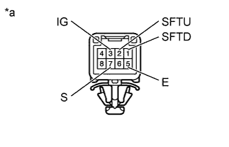
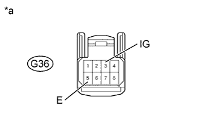
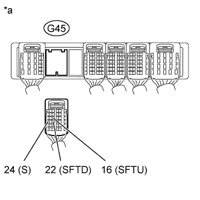

AUTOMATIC TRANSMISSION SYSTEM > Transmission Control Switch Circuit |
| 1.INSPECT TRANSMISSION CONTROL SWITCH |
|  |
Disconnect the G36 transmission control switch connector.
Measure the resistance according to the value(s) in the table below.
| Tester Connection | Condition | Specified Condition |
| 3 (IG) - 7 (S) | Shift lever in S, "+" or "-" | Below 1 Ω |
| 2 (SFTU) - 5 (E) | Shift lever held in "+" (Up-shift) | Below 1 Ω |
| 1 (SFTD) - 5 (E) | Shift lever held in "-" (Down-shift) | Below 1 Ω |
| 3 (IG) - 7 (S) | Shift lever not in S, "+" or "-" | 10 kΩ or higher |
| 2 (SFTU) - 5 (E) | Shift lever in S | 10 kΩ or higher |
| 1 (SFTD) - 5 (E) | Shift lever in S | 10 kΩ or higher |
| *a | Component without harness connected (Transmission Control Switch) |
|
| ||||
| OK | |
| 2.CHECK HARNESS AND CONNECTOR (TRANSMISSION CONTROL SWITCH - BATTERY, BODY GROUND) |
|  |
Disconnect the G36 transmission control switch connector.
Measure the voltage according to the value(s) in the table below.
| Tester Connection | Switch Condition | Specified Condition |
| G36-3 (IG) - Body ground | Engine switch on (IG) | 11 to 14 V |
| Engine switch off | Below 1 V |
Measure the resistance according to the value(s) in the table below.
| Tester Connection | Condition | Specified Condition |
| G36-5 (E) - Body ground | Always | Below 1 Ω |
| *a | Front view of wire harness connector (to Transmission Control Switch) |
|
| ||||
| OK | |
| 3.CHECK HARNESS AND CONNECTOR (TRANSMISSION CONTROL SWITCH - ECM) |
|  |
Disconnect the G45 ECM connector.
Measure the voltage according to the value(s) in the table below.
| Tester Connection | Condition | Specified Condition |
| G45-24 (S) - Body ground |
| 11 to 14 V |
| Below 1 V |
Turn the engine switch off.
Measure the resistance according to the value(s) in the table below.
| Tester Connection | Condition | Specified Condition |
| G45-16 (SFTU) - Body ground | Shift lever held in "+" (Up-shift) | Below 1 Ω |
| G45-22 (SFTD) - Body ground | Shift lever held in "-" (Down-shift) | Below 1 Ω |
| G45-16 (SFTU) - Body ground | Shift lever in S | 10 kΩ or higher |
| G45-22 (SFTD) - Body ground | Shift lever in S | 10 kΩ or higher |
| *a | Front view of wire harness connector (to ECM) |
|
| ||||
| OK | ||
| ||